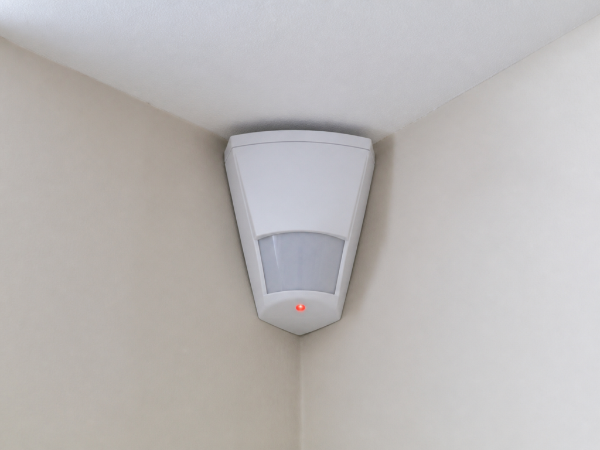
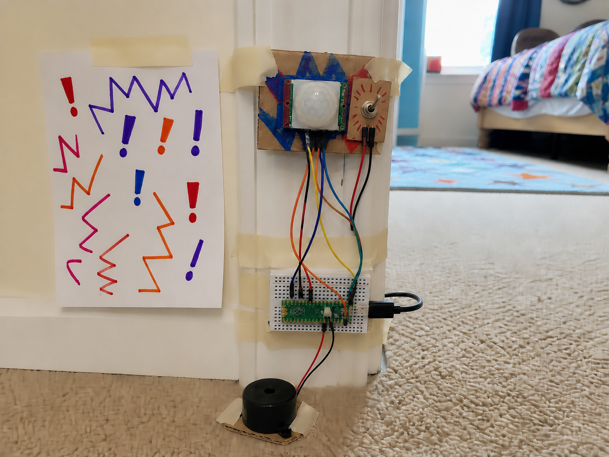

Burglar alarm
DetectMovement in the room
DecideShould the room be empty?
DoRaise the alarm
A PIR spots movement nearby, such as somebody walking past.
PIR stands for passive infrared. It watches the warmth that bodies give off and reports when that warmth moves, so it notices people and animals rather than furniture.
Your projects can use it to wake something up the moment somebody arrives, and go quiet again when they leave.


from gpiozero import MotionSensor
pir = MotionSensor(4)
moved = pir.motion_detectedfrom picozero import MotionSensor
pir = MotionSensor(16)
moved = pir.motion_detectedmoved is True or False. Also pir.when_motion and pir.when_no_motion to run a function the moment it changes. Most boards carry two dials that set how sensitive it is and how long OUT stays high.